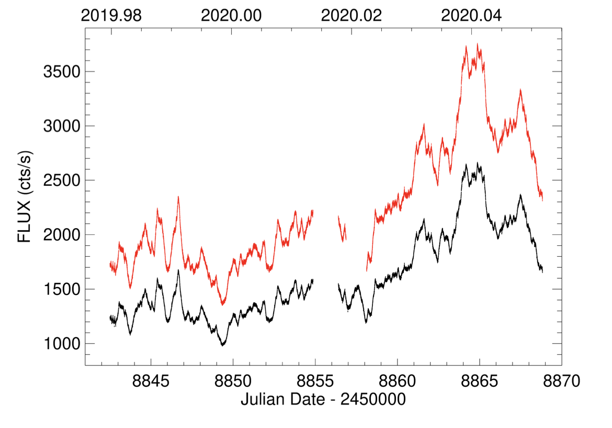
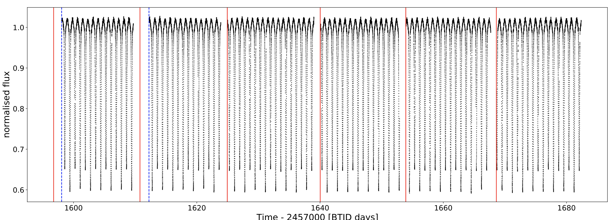

STATUS UPDATE: Proposal submission for TESS Cycle 4 is now live! Please visit the NASA ARK/RPS page to access the submission site.
Welcome TESS followers to our weekly news bulletin. This week we have one important notification in addition to three papers from the archive.
First the notification,
At stated above the TESS Cycle 4 submission process for proposals is now live, with submission hosted at the NASA ARK/RPS page. There are several additions to the page which include options to submit new Mini proposals and joint TESS/Fermi programs. Note that Cycle 4 is also the first TESS proposal cycle to be dual anonymous. For more information please check out our guest investigator proposal page in addition to the submission page. You can also find useful Cycle 4 proposal templates here.
Now on to our featured papers,
The dual nature of blazar fast variability. Space and ground observations of S5 0716+714 (Raiteri et. al., 2020):
The blazar S5 0716+714 is a short period variable, showing variability on timescales of less than a day.
In this paper the authors use 2-min TESS data (from December 2019 to January 2020) to analyze the objects fast variability, with additional data from the Whole Earth Blazar Telescope Collaboration ( B, V , R, and I bands), and Swift (UV and X-ray). The combined data sets allowed the authors to study the spectral variability of the object.
Using a new method of analysis the authors unveil the shortest optical variability. They found that below 3 days there are significant characteristic variability time-scales of about 1.7, 0.5, and 0.2 days.
Variations less than 0.2 days are strongly chromatic, and are thought to be due to intrinsic energetic processes involving emitting regions such as jet sub-structures with dimensions less than a milliparsec.
Flux changes on time-scales greater than 0.5 days are quasi-achromatic, and are likely due to Doppler factor changes of geometric origin.
Tidally perturbed pulsations in the pre-main sequence δ Scuti binary RS Cha (Steindl et. al., 2020):
When stars exist in binary systems tidal forces can influence asteroseismic properties. This effect has been noted in several systems via tidally perturbed pulsations, but non of which contained pre-main sequence stars.
In this paper the authors investigate RS Cha, a system which contains two δ Scuti stars which appear to have pulsations that are influenced by tidal effects. This is the first system of its kind to be observed with this effect.
Taking TESS data the authors have performed binary modeling using PHOEBE to interpret the binary light curve and allow the investigation of the pulsations of both components in RS Cha. From their analysis the authors find evidence for tidally perturbed modes, which enabled the identification of pulsation modes. The system is found to exhibit mainly dipole modes in addition to one prominent l=2 or l=3 mode. See the paper for more information.
Asteroseismology of the heartbeat star KIC 5006817 (Merc et. al., 2020):
Kepler and TESS data are used together with Lightkurve to conduct a global asteroseismic analysis of KIC 5006817 and quantify its stellar properties.
The analysis confirmed the classification as a heartbeat binary. The rich oscillation spectrum of KIC 5006817 facilitate estimating power excess at 145.50 μHz, and large frequency separation as 11.63 μHz.
The primary component is a low-luminosity, red-giant branch star with a mass, radius, surface gravity, and luminosity of 1.53 M⊙, 5.91 R⊙, 3.08 dex, and 19.66 L⊙, respectively. The orbital period of the system is 94.83 days.
The work presented is based on that conducted at the ERASMUS+ GATE 2020 Summer school on space satellite data.

Fig 1. Taken from Raiteri et. al., (2020). TESS light curves of S5 0716+714. The black light curve represents the SAP flux, whilst the red represents the PDCSAP.

Fig 2. Taken from Steindl et. al., (2020). The SAP flux light curve of RS Cha as black dots. Vertical red lines mark the start of any Orbits. Orbits 29 and 30 in sector 11 suffered from scattered light signals. The corresponding measurements have been removed by the TESS pipeline. This concerns the times between the start of the orbits and the blue dashed lines.